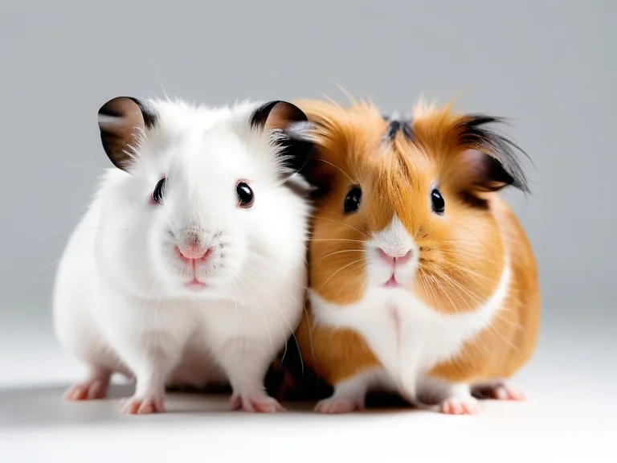

Kleintiere im Vergleich: Hamster vs. Meerschweinchen

Hamster und Meerschweinchen zählen zu den beliebtesten Kleintieren in deutschen Haushalten. Doch welches Tier passt besser zu Dir und Deiner Lebenssituation? In diesem ausführlichen Vergleich zeigen wir Dir die wichtigsten Unterschiede – von der Haltung über die Kosten bis zum Charakter.
Die wichtigsten Unterschiede auf einen Blick
Kriterium
🐹 Hamster
🐹 Meerschweinchen
Lebenserwartung
1,5 – 3 Jahre
5 – 8 Jahre
Haltung
Einzeltier (Einzelgänger)
Mindestens 2 Tiere (sozial)
Gehegeplanung
Mindestens 100 × 50 cm zusammenhängende Grundfläche; mehr ist besser, tiefe Einstreu einplanen
Großzügige dauerhaft verfügbare Bodenfläche für die gesamte Gruppe; kein kleiner Standardkäfig
Aktivitätszeit
Dämmerungs-/nachtsaktiv
Mehrere Aktivitäts- und Ruhephasen am Tag und in der Nacht
Handling/Zahmheit
Gewöhnungsbedürftig, nachts aktiv
Können zutraulich werden; Hochheben und Streicheln sind nicht automatisch angenehm
Futterkosten (ca.)
10–20 € pro Monat
20–40 € pro Monat (für 2 Tiere)
Hamster – Der nachtaktive Einzelgänger
Hamster sind von Natur aus Einzelgänger und sollten immer allein gehalten werden. Sie sind dämmerungs- und nachtaktiv – tagsüber schlafen sie meist tief in ihrem Nest. Ihr Rhythmus kann zu Menschen passen, die sie abends beobachten möchten. Auch dann sind tägliche Versorgung und Gesundheitskontrolle nötig.
Vorteile des Hamsters
Braucht trotz kleiner Körpergröße ein großes, gut eingerichtetes Gehege
Laufende Kosten und Rücklagen für Tierarztbesuche einplanen
Nicht kuschelig – lässt sich nur bedingt handzahm machen
Nachts aktiv (Laufrad-Geräusche können stören)
Nicht für Kleinkinder geeignet (beißt bei Stress)
Meerschweinchen – Gesellig, aber keine Kuscheltiere
Meerschweinchen brauchen passende Artgenossen und ausreichend Platz. Sie wechseln zwischen Aktivität und Ruhe, auch nachts. Zutraulichkeit bedeutet nicht, dass sie gerne getragen werden: Stillhalten kann eine Angstreaktion sein. Der Deutsche Tierschutzbund empfiehlt Gruppenhaltung und warnt davor, Hochheben mit angenehmem Kontakt gleichzusetzen.
Vorteile der Meerschweinchen
Können bei geduldigem Umgang Vertrauen entwickeln
Beobachten und freiwilliger Kontakt statt Tragen und Kuscheln
Lange Lebenserwartung (5–8 Jahre)
Charakterstark mit einzigartiger Persönlichkeit
Kommunikativ; Lautäußerungen müssen im Zusammenhang beurteilt werden
Nachteile der Meerschweinchen
Brauchen Artgenossen – mindestens 2 Tiere
Erfordern mehr Platz und größeren Käfig
Höhere Kosten (Futter, Tierarzt, Einstreu)
Benötigen täglich frisches Gemüse und Heu in großen Mengen
Können anfangs scheu sein und Eingewöhnungszeit brauchen
Welches Kleintier passt zu wem?
Die Entscheidung hängt stark von Deinen Lebensumständen ab:
Du bist oft unterwegs oder arbeitest viel? Organisiere tägliche Versorgung und eine zuverlässige Urlaubsbetreuung für beide Tierarten.
Du hast Kinder? Erwachsene tragen die Verantwortung. Kinder können unter Aufsicht beobachten und bei der Versorgung helfen; beide Tierarten sind keine Spielzeuge.
Du hast wenig Platz? Prüfe zuerst den Platz für ein dauerhaft ausreichend großes Gehege; die Körpergröße ist kein Maß für den Platzbedarf.
Du möchtest mehrere Tiere? Dann sind Meerschweinchen die richtige Wahl – aber bedenke den höheren Aufwand.
🛒 Empfohlenes Kleintier-Zubehör auf Amazon.de
Hier könnten Käfige, Einstreu, Heu oder Spielzeuge verlinkt sein. (Affiliate-Link)
Die richtige Gehege-Einrichtung
Egal ob Hamster oder Meerschweinchen – ein artgerechtes Gehege ist das A und O. Beide brauchen ausreichend Einstreu zum Buddeln, Versteckmöglichkeiten, ein separates Toiletteneck und natürlich einen ruhigen Standort ohne Zugluft und direkte Sonneneinstrahlung. Ein Auslaufgehege für die tägliche Bewegung ist ebenfalls empfehlenswert.
Fazit
Wähle nach Platz, Tagesrhythmus und langfristiger Versorgung, nicht nach dem Wunsch nach einem Kuscheltier. Hamster schlafen meist tagsüber; Meerschweinchen benötigen Artgenossen. Für beide gilt: Rückzug respektieren und Kontakt nicht erzwingen.
Wenn du dich zum ersten Mal mit der Kleintierhaltung beschäftigst, wirst du früher oder später auf Halbwissen stoßen – und davon leider jede Menge. Lass uns gemeinsam aufräumen, damit dein Liebling von Anfang an gut versorgt ist.
Mythos 1: „Hamster sind ideale Anfängertiere für Kinder." Weder Hamster noch Meerschweinchen sind Spiel- oder Kuscheltiere. Ein festes Kinderalter garantiert keinen sicheren Umgang. Kleine Kinder sollen Meerschweinchen nicht tragen; auch ältere Kinder brauchen Aufsicht. Bei notwendigem Hochheben müssen Brust und Hinterkörper sicher gestützt werden, ohne das Tier zu drücken. RSPCA: sicherer Umgang mit Meerschweinchen. Hamster nicht zum Spielen wecken; Begegnungen nur während ihrer eigenen Wachzeit.
Mythos 2: „Meerschweinchen vertragen sich immer untereinander."
Falsch. Meerschweinchen sind zwar Gruppentiere, aber die Zusammenstellung muss stimmen. Zwei unkastrierte Böcke vertragen sich oft nur, wenn sie als Geschwister aufgewachsen sind und genug Platz haben. Bei Weibchen kann ein älteres Tier ein junges unter Umständen mobben. Plane also nicht einfach „zwei Meerschweinchen, fertig", sondern informiere dich vorher über die richtige Vergesellschaftung – am besten über eine kompetente Pflegestelle oder einen erfahrenen Züchter.
Mythos 3: „Hamster brauchen kein großes Gehege, die schlafen eh nur." Auch ein nachtaktives Tier benötigt dauerhaft Bewegungsraum. Die PDSA nennt unter Verweis auf die Tierärztliche Vereinigung für Tierschutz mindestens 100 × 50 cm Grundfläche, besser mehr, und mindestens 25 cm geeignete Einstreu zum Graben. Auslauf ersetzt kein ausreichend großes Gehege.
Typischer Fehler bei Meerschweinchen: Frisches Heu durch Trockenfutter ersetzen, weil es „praktischer" ist. Heu muss aber 80 Prozent der täglichen Nahrung ausmachen – es hält die Zähne gesund und den Darm in Schwung.
Typischer Fehler bei Hamstern: Laufrad zu klein. Der Rücken des Tieres darf beim Laufen nicht durchhängen. Mindestens 28 cm Durchmesser, bei Goldhamstern besser 30 cm und mehr.
Typischer Fehler bei beiden: Kein tierärztlicher Notfallplan. Suche dir bevor ein Tier einzieht, einen vogelkundigen oder kleintierkundigen Tierarzt in deiner Nähe. Im Notfall zählt jede Stunde.
Entscheidungshilfe ohne Erfahrungsversprechen
Die folgenden Fragen sind eine Planungshilfe, keine Berichte über konkrete Halter:
Für Familien: Macht es den Kindern Freude, Tiere ruhig zu beobachten und zu versorgen, auch wenn diese nicht angefasst werden möchten? Wer übernimmt die Pflege, wenn das Interesse nachlässt?
Bei Schichtarbeit: Passen Versorgung und Gesundheitskontrolle zuverlässig in den Alltag? Gibt es einen ruhigen Gehegestandort, an dem nächtliche Geräusche niemanden zum Stören des Tieres verleiten?
Für alle Haushalte: Sind Platz, Artgenossen bei Meerschweinchen, Tierarztkosten und Betreuung während Abwesenheit dauerhaft gesichert?
Saisonale Aspekte – das ganze Jahr im Blick
Kleintiere spüren die Jahreszeiten oft deutlicher als wir denken. Auch wenn Meerschweinchen und Hamster ausschließlich in der Wohnung leben, reagieren sie auf Tageslicht, Temperatur und Luftfeuchtigkeit. Mit ein paar einfachen Anpassungen sorgst du dafür, dass es deinem Tier zu jeder Jahreszeit gut geht.
Frühling – die Zeit des frischen Grüns:
Sobald die ersten Kräuter sprießen, darfst du deinen Meerschweinchen Löwenzahn, Klee und junge Brennnesseln anbieten – aber in Maßen und nie direkt vom Spaziergang ungewaschen. Hamster freuen sich über frische Vogelmiere oder ein Stückchen Apfel. Wichtig: Neue Futtermittel immer langsam einführen, sonst droht Durchfall. Dazu beginnt im Frühling bei Meerschweinchen die Fellwechselphase. Bürste dein Tier regelmäßig – das verhindert, dass es zu viel Fell schluckt und eine Haarballen-Problematik entsteht.
Sommer – Vorsicht vor Hitze:
Hamster vertragen Temperaturen über 25 °C extrem schlecht. Stell das Gehege niemals in die pralle Sonne, auch nicht „nur kurz". Im Hochsommer hilft eine Flasche mit kühlem Wasser, eingewickelt in ein Handtuch und von außen ans Gehege gelehnt – oder ein kühler Tonuntersetzer aus dem Baumarkt. Meerschweinchen brauchen im Sommer vor allem Schatten und ständig frisches Wasser. Wenn du einen gesicherten Auslauf im Freien planst: Nur bei Temperaturen zwischen 15 und 22 °C, immer mit Rückzugsmöglichkeit und Aufsicht.
Herbst – Vorbereitung auf die Innensaison:
Eine deutliche Veränderung von Aktivität oder Fressverhalten sollte nicht pauschal als normale Winterruhe abgetan werden. Heimhamster sollen nicht absichtlich auskühlen: Kälte kann einen gefährlichen Torpor auslösen. Ist ein Tier ungewöhnlich kalt, kaum ansprechbar oder frisst nicht, hole rasch tierärztlichen Rat. Die oben verlinkte PDSA-Information erläutert dieses Risiko.
Winter – trockene Heizungsluft und kurze Tage:
Die Heizungsluft im Winter ist für beide Tierarten eine Herausforderung. Sie trocknet die Atemwege aus und staubt mehr. Gegenmaßnahmen: Ein Luftbefeuchter, feuchte Handtücher über der Heizung oder ein Vernebler im Raum. Stell das Gehege außerdem nicht direkt an die Heizung, sondern an einen hellen, zugfreien Platz mit stabiler Temperatur zwischen 18 und 22 °C. Hamster freuen sich über zusätzliche Nistmaterialien wie unbedrucktes Küchenpapier, Meerschweinchen über eine kuschelige Häuschen-Variante mit Heu-Einlage.
Wenn du diese jahreszeitlichen Besonderheiten beachtest, hast du das ganze Jahr über Freude an deinem Tier – und es an dir. Es sind die kleinen Anpassungen, die den Unterschied machen zwischen „funktioniert" und „fühlt sich richtig gut an".